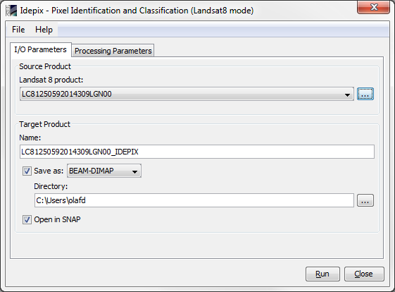
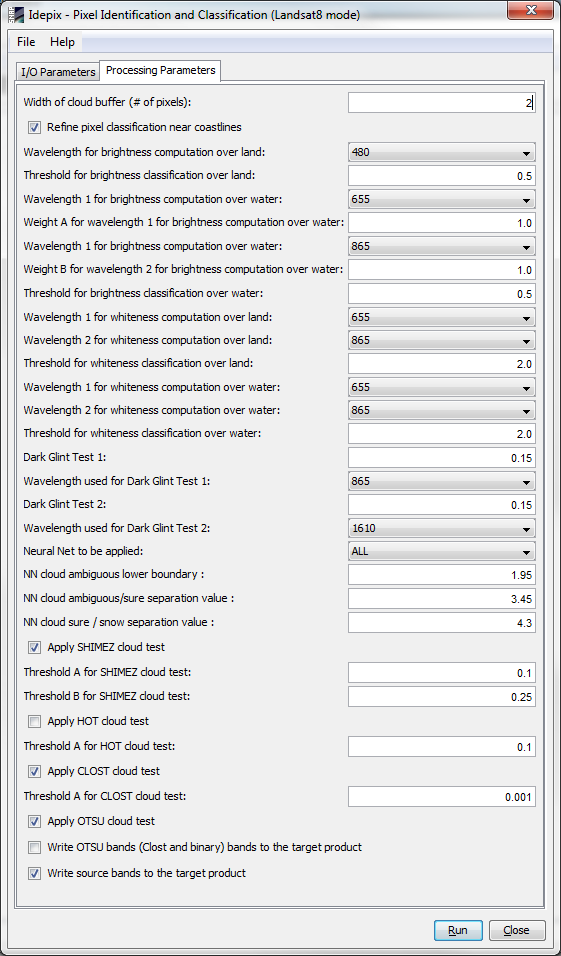

| SNAP Data Processors - Idepix Processor - Landsat-8 Processor Description |
|

Name: Used to select the spectral source product. The source product shall contain spectral bands providing a source spectrum at each pixel. Use the ... button to open a data product currently not opened in the Sentinel Toolbox.
Name: Used to specify the name of the target product.
Save to: Used to specify whether the target product should be saved to the file system. The combo box presents a list of file formats.
Open in SNAP: Used to specify whether the target product should be opened in the Sentinel Toolbox. When the target product is not saved, it is opened in the Sentinel Toolbox automatically.
NOTE: The pixel classification for Landsat-8, i.e. all the cloud tests, work on TOA reflectances rather than radiances. As the Landsat-8 product reader by default interprets the spectral band values as radiances, a specific property must be set to read the data as reflectances before using Idepix:

Width of cloud buffer (# of pixels):
The width of the cloud buffer in # of pixels. The default value is 1.
Refine pixel classification near coastlines:
If set, the pixel classification near coastlines is refined using a spatial filtering.
This improves distinction of clouds and bright beaches. Note that this is a time consuming operation
for Landsat-8 products, as this filtering also considers neighbourhood pixels of the pixel being
classified. The default value is 'false'.
Neural Net to be applied:
Specifies the neural net which is applied for the pixel classification. The user can select between a
standard neural net ('ALL') suitable for most conditions, and various other neural nets for certain conditions,
i.e. if land or water is dominant in the given scene. The neural nets with the suffix '_USE_THERMAL'
explicitly use the thermal infrared bands at 10895nm and 12005nm as input. The default neural net is 'ALL'.
NN cloud ambiguous lower boundary:
The boundary of the neural network output value where pixels are regarded as either clear (NN output lower
than boundary) or 'cloud ambiguous' (NN output higher than boundary). The output value of the neural network
(floating point number on the interval [0.0, 5.0]) is written to the target product in a band 'nnResult'.
Providing the NN cloud ambiguous lower boundary as user option allows a fine tuning of the pixel classification
under certain conditions. The default value is 1.95.
NN cloud ambiguous/sure separation value:
The boundary of the neural network output value where pixels are regarded as either 'cloud ambiguous' (NN output
lower
than boundary) or 'cloud sure' (NN output higher than boundary). The output value of the neural network
(floating point number on the interval [0.0, 5.0]) is written to the target product in a band 'nnResult'.
Providing the NN cloud ambiguous/sure separation value as user option allows a fine tuning of the pixel
classification
under certain conditions. The default value is 3.45.
NN cloud sure /snow separation value:
The boundary of the neural network output value where pixels are regarded as either 'cloud sure' (NN output lower
than boundary) or 'snow' (NN output higher than boundary). The output value of the neural network
(floating point number on the interval [0.0, 5.0]) is written to the target product in a band 'nnResult'.
Providing the NN cloud sure / snow separation value as user option allows a fine tuning of the pixel classification
under certain conditions. The default value is 4.3.
Apply SHIMEZ cloud test:
If set, the SHIMEZ cloud test (see algorithm specification for details) is applied for the cloud classification
in addition to the neural network. The default value is 'true'.
Threshold A for SHIMEZ cloud test:
The threshold A in the SHIMEZ cloud test (see algorithm specification for details). The default value is 0.1.
Threshold B for SHIMEZ cloud test:
The threshold B in the SHIMEZ cloud test (see algorithm specification for details). The default value is 0.25.
Apply HOT cloud test:
If set, the HOT cloud test (see algorithm specification for details) is applied for the cloud classification
in addition to the neural network. The default value is 'false'.
Threshold A for HOT cloud test:
The threshold A in the HOT cloud test (see algorithm specification for details). The default value is 0.1.
Apply CLOST cloud test:
If set, the CLOST cloud test (see algorithm specification for details) is applied for the cloud classification
in addition to the neural network. The default value is 'true'.
Threshold A for CLOST cloud test:
The threshold A in the CLOST cloud test (see algorithm specification for details). The default value is 0.001.
Apply OTSU cloud test:
If set, the OTSU cloud test (see algorithm specification for details) is applied for the cloud classification
in addition to the neural network. The default value is 'true'.
Write source bands to the target product:
If set, all bands from the source product are written to target product.
The default value is 'true'.